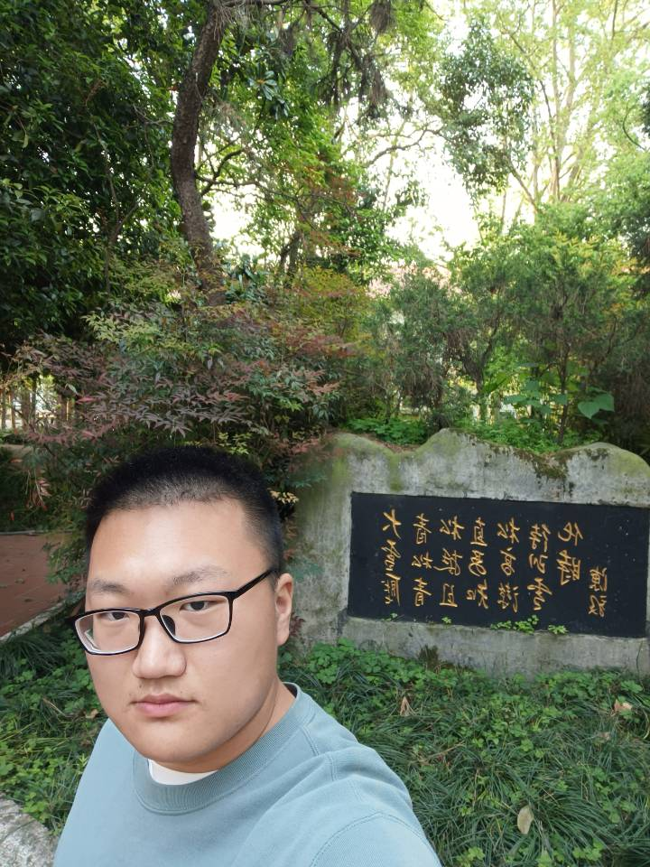

关 于 我
我的姓名：李民。目前只是一个默默无闻的大二学生。在武汉的中南财经政法大学学习，我本人喜爱旅游。
我现居住在湖北省的省会城市——武汉，两江汇流，三镇鼎立,九省通衢。
我的家乡在襄阳，襄阳，湖北省辖地级市、中国历史文化名城、楚文化、汉文化、三国文化的发源地，
已有2800多年历史，历代为经济军事要地。素有“华夏第一城池、铁打的襄阳、兵家必争之地”之称。
我比较喜欢玩游戏，但玩的不多，而且喜欢玩的比较小众的游戏，导致找不到什么人一起玩。在过去的几年里，
我好像没什么长进，不过在接下来的日子里，我会努力弥补各方面的不足，多与别人交朋友。
我最喜欢的城市是北京，虽然只在高中暑假的时候短暂去旅游过几天，但那的魅力还是深深的吸引了我。在今后的日子里，我一定会再去北京看看。
